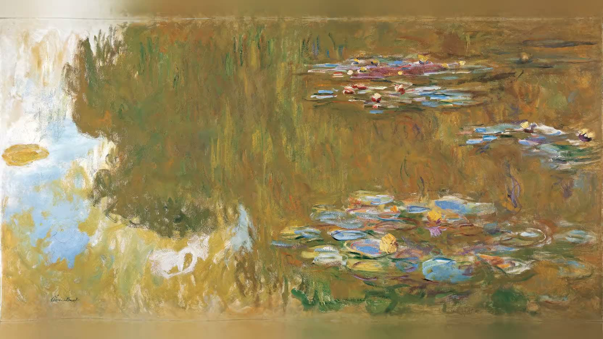
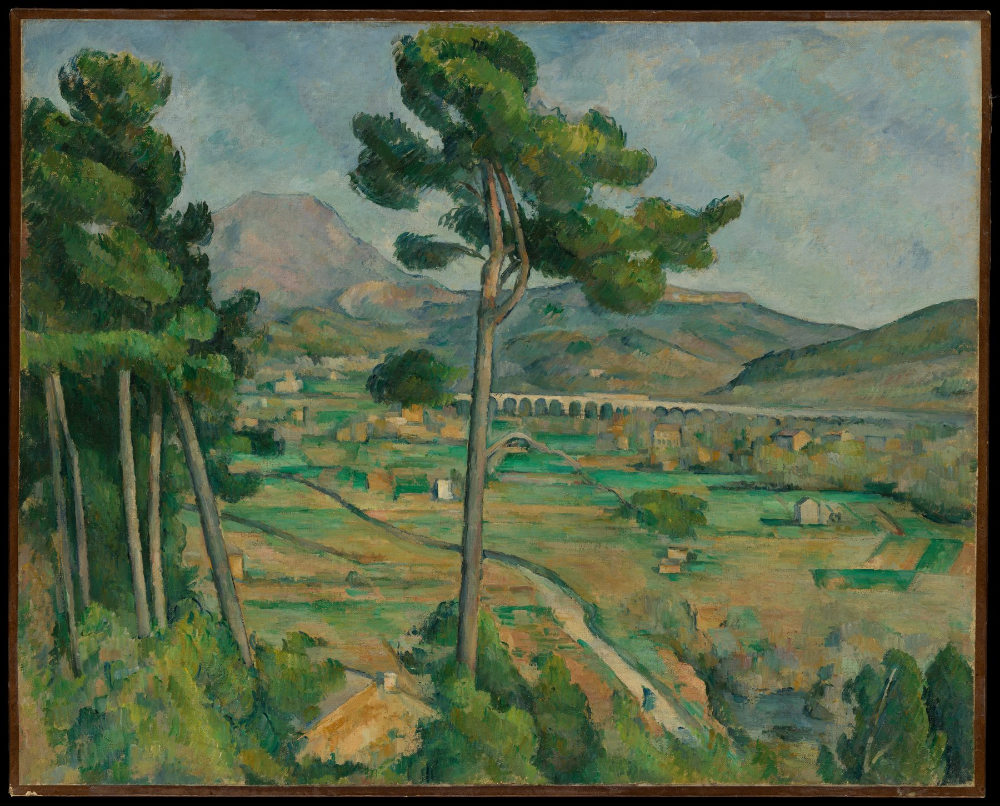
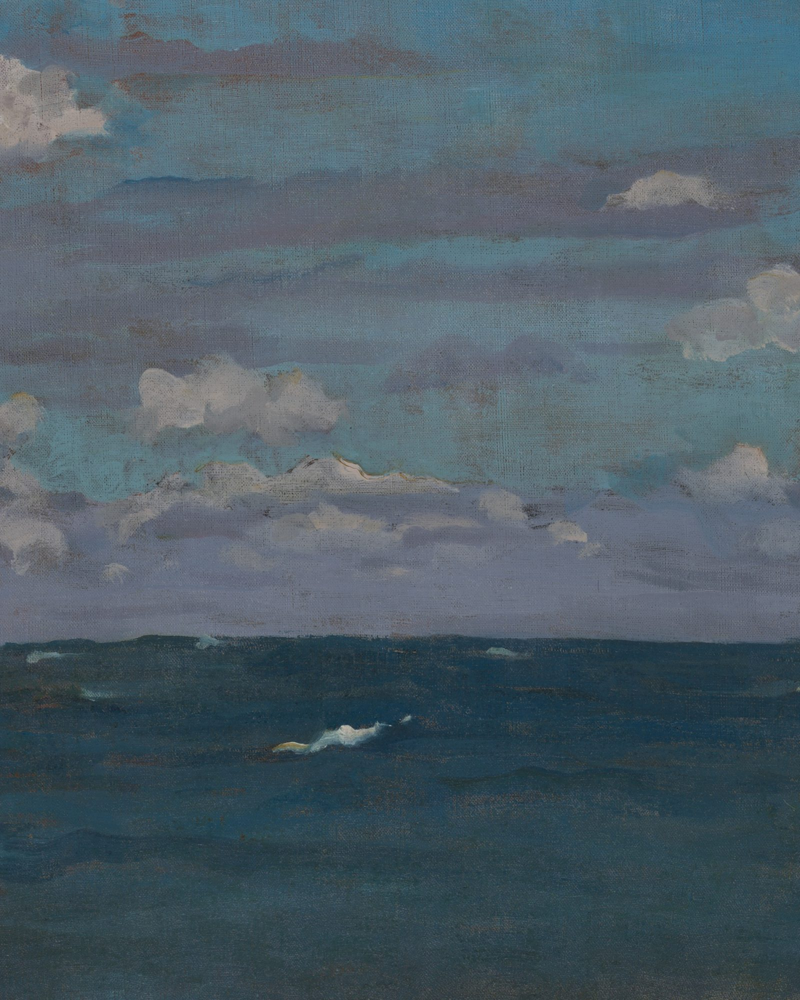
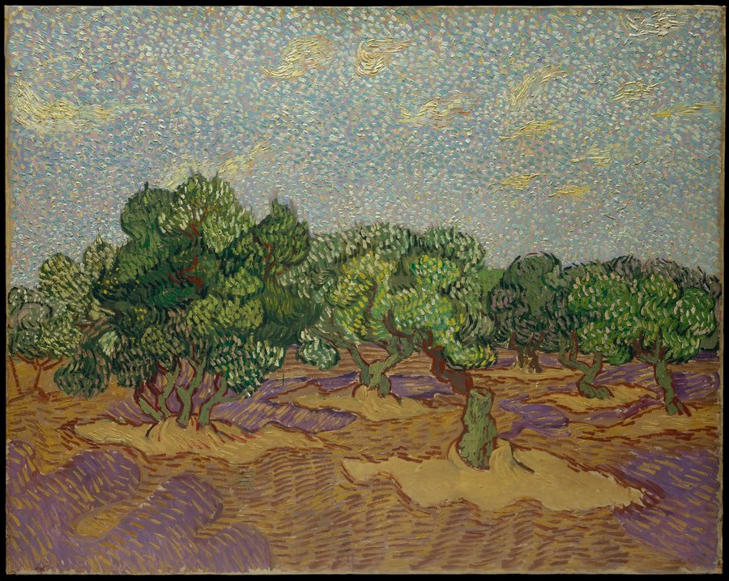
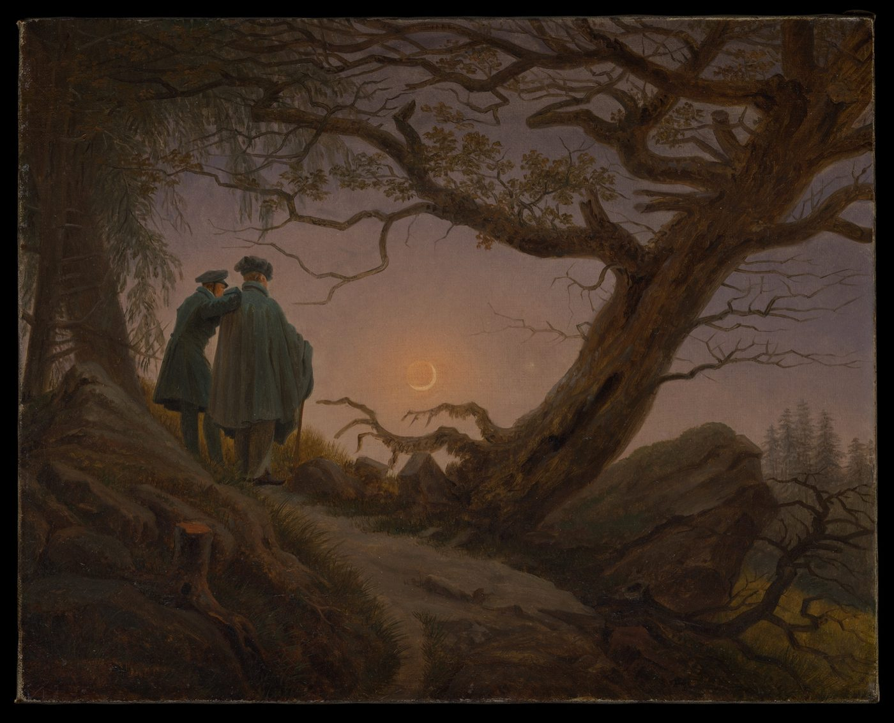
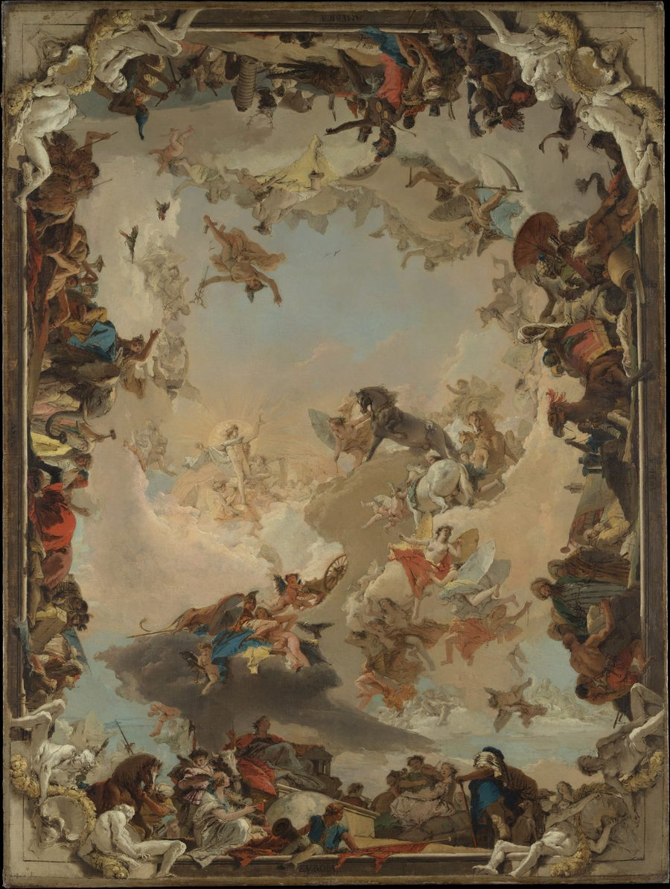

01
Wander our galleries


Go beyond mindfulness. Into a deeper Heartfulness.
The primer and transition are free to try. The meditation itself lives in Heartful, arriving soon.
Join the waitlist49% lower dementia incidence among people who visit museums every few months or more.
The study ↗
Scans measured the brains of individuals while they were shown images of paintings. According to the brain scans, “when you look at art… the blood flow increased for a beautiful painting just as it increases when you look at somebody you love.” Cortisol levels immediately drop, and pleasure sensations measurably increase.
Ishizu, T. & Zeki, S. (2011). Toward a brain-based theory of beauty. PLoS ONE 6(7).
Zeki, S. (1999). Inner Vision: An Exploration of Art and the Brain. Oxford University Press.
The portal to history’s great masterpieces is in your pocket
Art is human stories. It is empathy. Works made by real people trying to express real feelings, emotions, and experiences. By curating you a personalised selection of artworks, our immersive meditations have the unique capacity to understand you on a profound level. It taps into a universal human experience. Through art, we introduce a narrative variety and emotional depth unseen in traditional mindfulness.
Join the waitlist
Look at Vincent van Gogh, who channelled his depression into beauty.
Van Gogh · Olive Trees, 1889
Caspar David Friedrich painted Two Men Contemplating the Moon when he lost his young apprentice. A reminder that those you love are always with you.
Friedrich · c. 1825–30
One thinks of Tiepolo, who never stopped inventing exciting ways to show traditional subjects. A Venetian trail-blazer.
Tiepolo · Allegory of the Planets and Continents, 1752